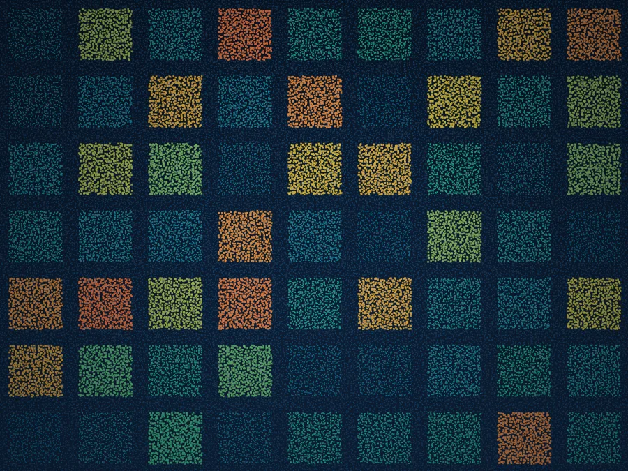

Recommended system
Wrangell is built for this.
A flexible, pod-mounted system with high throughput for mid-altitude work.

High-density 3D models of entire cities — buildings, infrastructure, and the spaces between.

Urban canyons cast deep shadows for single-look systems, and keeping a city-scale 3D model current is costly with conventional lidar.
Dense, multi-viewpoint coverage that reaches into narrow streets and courtyards, captured fast enough to update at city scale.
4–6 viewpoints per pass reconstruct facades and street floors that a single look leaves dark.
30–100+ points per square meter for building- and asset-level detail.
Wide swaths from altitude make repeat city coverage practical.
A flexible, pod-mounted system with high throughput for mid-altitude work.
Book a call to scope your project, or request representative point clouds for review.